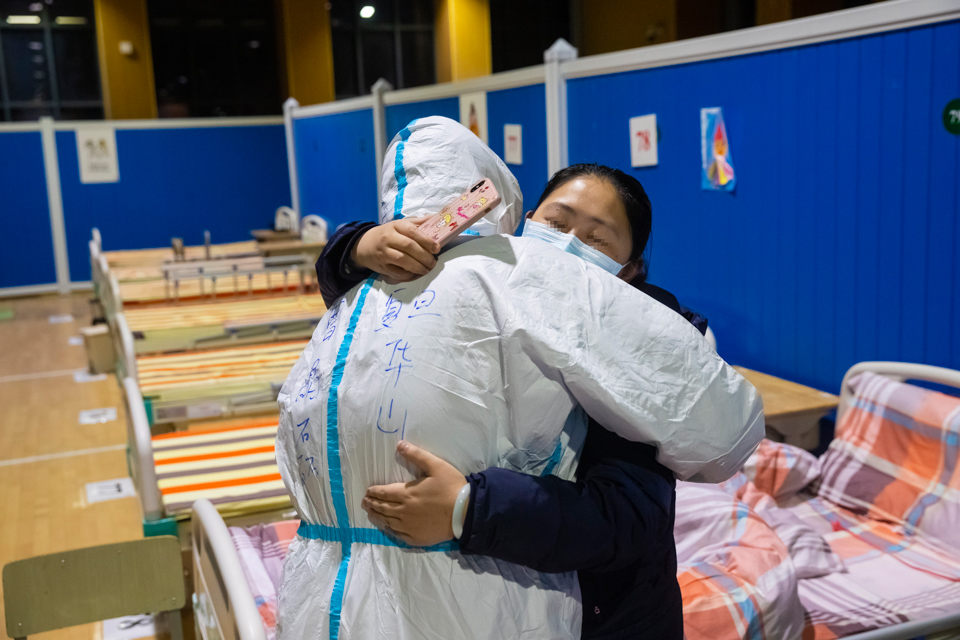

疫情重压下的武汉殡葬服务：封城影响处理时间，患者遗体限定殡仪馆接收
原文链接 备份链接 *几家殡葬服务公司告诉南方人物周刊，大约在1月中旬，他们已经停止提供殡葬服务。当时殡仪馆已经停止悼念活动，以避免扩大交叉传染的风险* *武汉民政局于近日宣布，死亡原因为新型冠状病毒感染的肺炎（包括疑似）的遗体火化不 …
作者：南方周末记者 崔慧莹 南方周末实习生 于北辰
（本系列均为南方周末、南方人物周刊原创，限时免费阅读中）
殡仪馆来电告知家属，疫情结束后，将安排家属在特定的时间段分批领回骨灰，但具体时间要等待后续通知。
关于墓地涨价的说法，尚无法证明是“推销话术”还是中肯建议。但对于如何妥善安置逝者，相关部门已在研讨中。
线上追悼时间不能太久，每位逝者大约40分钟。家属可能会哭泣，消耗大量的体力，获得情绪的宣泄，也从亲友的安慰中获得能量。“每个线上的亲友追悼群，都像一个支撑伤痛的房子，但这只是暂时的应急方案。”

2020年3月14日，上夜班之前，两位志愿者在东湖凌波门休息晒太阳。（南方周末记者翁洹/图）
从2020年2月17日22:13，医生告诉他父亲心跳停止；到3月11日，武汉市蔡甸区玉笋山殡仪馆来电与他确认信息，悲愤与忧惧像一块巨石，在他心口上碾压了23天。
此前，他不知道因新冠肺炎去世的父亲被送去了哪个殡仪馆，是否已火化，也不知道何时能领回骨灰安葬。一通短暂的电话，让石头落了地，心碎成好几块儿，一切又恢复了沉寂。
在武汉，不知多少逝者的骨灰仍被寄存在殡仪馆，等待亲人领取后安葬。
3月，疫情逐渐稳定，殡仪馆的来电陆续打到了更多逝者家属的手机上，核实逝者姓名身份及联系人信息，告知疫情结束后，将安排家属在特定的时间段分批领回骨灰，但具体时间要等待后续通知。
近期与逝者家属联系的，有医院、社区工作者、民警以及殡葬服务业者。后者向家属提供殡葬咨询服务，隐约提醒墓地可能涨价，骨灰盒需要预备，建议先交定金。
根据国家卫健委、民政部和公安部三部门2月1日印发的《新型冠状病毒感染的肺炎患者遗体处置工作指引（试行）》（简称《指引》），不得举行遗体告别仪式。
已有志愿者提供“云祭祀”等心理援助。“一个人在家里哭一场，跟在朋友面前哭一场，感觉还是不一样的。”疫情期间为多个逝者家庭提供心理援助的社区志愿者雷五明说。他是武汉理工大学心理健康与生涯规划教育研究所所长。
雷五明建议，在封城全面解除后，最好能允许家属为逝者操持告别仪式，“给家属一个表达悲痛的方式，也接受其他人传递来的能量”。
感染新冠病毒的父亲走了之后，王鹏一直没获得后续信息，不知哪个环节没衔接上。
“据我了解，各家医院的逝者送往哪个殡仪馆，有明确规定。家属不知道亲人去向，应该是个例。可能医院没说清殡仪馆名称，或派出所没来得及通知家属，电话没打通等。”雷五明说。
也有家属跟此前的王鹏一样，不知道亲人的骨灰在哪里，因为自己也还在隔离。
3月3日，有自称医院医务处负责善后工作的人来电，询问王鹏想把父亲安葬在何处。
“我们会征询家属意见，统一登记上报，如果后续有关于墓地或殡葬相关的优惠政策，及时通知家属。”南方周末记者以逝者亲友身份咨询时，这位工作人员解释，之前工作确实太忙了，可能有些通知不够及时，希望家属理解，现在一一联系家属，就是让大家安心。等解封后，再通知家属来领死亡通知单，凭此单领取骨灰。
3月4日，一位叫“燕子”的女士与王鹏联系。她自称提供“疫情生命关怀服务”，来自由殡葬协会会员单位自发组建的平台，免费提供治丧流程指导、墓地咨询等服务。
“陵园没有预备那么多墓，现在还要赶工新建，很多陵园库存不足了。”燕子在为王鹏提供墓地咨询服务时说，“很多人现在在网上预订，经过我们介绍的也有很多。十万以上的很少，都在定三至五万的，这种低价位的墓，更好卖一点，会紧俏。”
燕子提供的转定金二维码为“武汉孝行天下的店铺”，工商资料和公司官网均显示，这是一家殡葬礼仪服务公司。早在2月1日，中国殡葬协会青年与社会工作委员会联合武汉孝行天下礼仪服务有限公司等殡葬服务公司曾发出求助信，请求支援口罩、酒精、运尸袋等防护物资。南方周末记者多次联系求助信中的两位联系人，均未获回应。
墓地要涨价的风声已经传开了，一位自称在武汉市殡葬行业做了两年的人士告诉南方周末记者。“房子估计会降价，但墓地反而会涨。比如说九峰山48800的墓地，已经涨成58800了。”
九峰山革命烈士陵园被称为“武汉八宝山”。据武汉市九峰纪念花园管理有限公司官网介绍，九峰山由象鼻峰等九座山峰组成，是“明末清初达官贵人首选的风水宝地”。
上述人士向南方周末记者介绍，交一两千元定金选了号，就不会再涨价，一般家庭买的墓地均价在三万块钱左右，三万元以上的墓，他可以提供约两千块的优惠。疫情期间，不能现场看墓地，感兴趣的话，可以把图片和价格发来“云选墓”。
关于墓地涨价的说法，尚无法证明是“推销话术”还是中肯建议。但对于如何妥善安置逝者，相关部门已在研讨中。
3月11日，湖北仙鹤湖湿地公园推出1000座一平米标准公益墓，捐赠给因感染新冠病毒去世的武汉市民。3月14日晚，公墓一位负责登记需求信息的工作人员向南方周末记者表示，他们已将方案上报给政府有关部门，能否落实、如何落实，将等待进一步安排。
燕子告诉王鹏，这个免费公墓太远了，坐大巴车过去要4个小时，她推荐了九峰山附近几个新建的墓地。
除了墓地，燕子还提供了“抗疫爱心特价寿盒”清单，20种产品，价格从398-5880元不等，包括川玉、汉白玉、梨木、黑檀木等各类材质。寿盒“面向武汉丧亲家庭限时供应”，转一两百元定金给“武汉孝行天下的店铺”二维码，即可完成预定。
父亲呼吸衰竭、咳嗽不止、全身发紫，裹在一条粉白绿色条纹相间的棉被里。王鹏穿着社区送的一层透明薄塑料防护服，托着父亲的头和上半身。隔着黑色的泳镜，父子俩互相看了一眼，没想到这一眼竟是诀别。
2月9日，父亲住院吸上氧后，情况有些好转，但很快又急剧恶化，ICU病床也满了，住不进。这一日，武汉确诊、重症数据，还未攀升到顶点。火神山医院刚投入使用一周，雷神山医院ICU病房还未投入使用。
2月15日，医生告诉王鹏，父亲病情危重，但有创呼吸机不够用、人工肺ECMO更要排队。17号晚上，噩耗传来：医生告诉他，父亲心跳刚刚停止，按规定还要再抢救半小时，可能没太大希望了。
“我能说什么呢？就说谢谢医生。”他顿了半晌，声音沙哑，“最后空出一台有创呼吸机给他插管，但父亲当时已经太虚弱了，没坚持住。”

ICU病人需要24小时的密切监测，左边的病人用上了ECMO。（南方周末记者翁洹/图）
按照卫健委等发布的《指引》，医疗机构要完成遗体卫生防疫处理，密封后严禁打开。
《指引》规定了遗体处置流程，各医院对之进行了细化。南方周末记者在武汉市蔡甸区某医院看到的一份流程显示：患者死亡后30分钟内，医务人员电话通知家属到院办理手续，领取死亡证明。医务人员与家属在四份遗体接收登记表签字，一张交殡仪馆工作人员，一张交家属，其余留在病区。
前述与王鹏联系的医院医务处工作人员说，包括逝者的贵重遗物，也有保存。
疫情早期，家属还可以去医院告别。“隔着玻璃看一眼，表示这是我们家的人。”雷五明接触过一位五十多岁的女性，丈夫初一发病，初四就去世了。但家里人都告诉她不要去医院，担心被传染。等到她自己隔离期结束，又哭诉自己冷酷无情，丈夫对她很好，连最后一面都没见。
到后来，私家车限行，小区封闭管理，加上密切接触者要求隔离，几乎没有家属可以到场，只能由警察和医护人员代签。
而即便亲属在场，因为这是传染病，也不能跟殡仪车送行。特殊时期，非新冠病毒感染的逝者家属，也未能到殡仪馆相送。
约从1月20日开始，仅有汉口殡仪馆定点接收新冠病毒感染患者遗体。
1月26日起，武汉疫情患者（包括疑似）遗体免收火化费。武汉民政局还提到，为加强运力，已争取市指挥部、省民政厅支援，调配了一批殡仪车辆、人员以及防护装具，充实到殡仪馆，提高了遗体接运和服务保障能力。
遗体运至殡仪馆也从定点接收变成就近处理。2月1日，《指引》发布，要求新冠肺炎患者遗体应当就近全部火化，不得采用埋葬或其它保存遗体方式，不得移运。
这一日，多家殡葬机构发出了求助信，请求支援防护服、酒精、护目镜、运尸袋等物资。
多家外地殡仪馆曾派出了殡葬服务队支援湖北。2月20日，湖北副省长万勇到武昌殡仪馆视察，提出做到“身份不错、手续完备、流程规范、数据真实”，也感谢兄弟省市来鄂援助人员。
目前武汉疫情缓解，这些外援也停下工作，处于隔离观察中。“上班时候我天天心里默念，我要活着回去。”一位外援的殡葬人员婉拒了南方周末记者采访。
没能送亲人最后一程，成为王鹏一家人的遗憾。所幸他和母亲均未被感染。
2月19日，父亲去世的第三天，王鹏给父亲的主治医生打过一次电话，医生仍不知道父亲被送去了什么地方，是否已火化，表示会帮忙联系太平间询问，也没回音。
对此，前述医院医务处的人员解释，医院当时大部分是外援医生，对医院安置逝者的流程不太清楚。
王鹏已经足够机警理智，在疫情宣告“人传人”之前，就抢购了最好的医用口罩，花100元买了一件防护服，备有84消毒液……几乎用上了一个普通市民能获得的所有相对“靠谱”的武器来对抗病毒，却仍很难鼓起勇气，踏入父亲曾住过的房间。
直到后来母亲解除隔离回家，母子俩为了分开房间隔离，才打开了父亲的房门，把床单都扔了，床板用消毒液喷洒后，放在更方便去洗手间的客厅，给母亲睡。
对一些逝者家庭来说，家庭成员陆续发病，仍在治疗或隔离观察中，尚无精力，也并不知道该如何面对逝者的身后事。
“有个女孩说，爷爷因新冠肺炎去世了，轻症的妈妈跟奶奶在一处，最先得病的父亲还在另一个地方隔离。她问我，如果哪一天，可以领回爷爷的骨灰了，该怎么告诉奶奶这个消息？”雷五明也感到忧心。
这是每个逝者家庭都要面对的“关口”。所有人都渐渐意识到，狡猾的冠状病毒实在残酷。隔离防护没做好，一家人感染；隔离防护做得好，又得在骨肉相连的地方切割。越是理智的爱与保护欲，越得在亲人之间隔出一道防线。

2020年3月9日晚，武汉市洪山体育馆武昌方舱医院休舱前夜，新冠肺炎患者与上海复旦大学附属华山医院医护人员拥抱道别。（新华社/图）
因为怕感染儿子，父亲发烧后，曾在母亲的陪伴下，步行2公里去医院。王鹏开车在旁边缓缓跟着，走了2个多小时。每次看到父母佝偻着身子，坐在路边的石墩子上喘息，他都忍不住喊他们上车。父母总是拒绝——如果儿子感染，回家再传给儿媳和6岁的孙子，怎么办？
悲伤需要宣泄，但封城状态下，逝者家属的悼念方式太有限了——有人向着殡仪馆方向磕头，有人在网络上记录逝者的故事。
近期，雷五明已通过微信群，为三个逝者家庭召集了线上追悼会，逝者的亲友、社区干部和心理咨询志愿者等被拉到一个群里，亲友用语音、文字来哀悼，其他人发流泪、双手合十等表情。
时间不能太久，每位逝者大约40分钟。家属可能会哭泣，消耗大量的体力，获得情绪的宣泄，也从亲友的安慰中获得能量。“每个线上的亲友追悼群，都像一个支撑伤痛的房子，但这只是暂时的应急方案。”
王鹏还不知道何时可以去殡仪馆，当时殡仪馆电话来得突然，他没听清，以为是“御景山”，网上查了下，他猜测应该是“玉笋山”殡仪馆，一个此前他从未想过要去关注的地方。
（王启阳为化名，南方周末记者杜茂林、王伟凯对本文亦有贡献）
原文链接 备份链接 *几家殡葬服务公司告诉南方人物周刊，大约在1月中旬，他们已经停止提供殡葬服务。当时殡仪馆已经停止悼念活动，以避免扩大交叉传染的风险* *武汉民政局于近日宣布，死亡原因为新型冠状病毒感染的肺炎（包括疑似）的遗体火化不 …
原文链接 备份链接 图片来源：图虫 来源：黄陂区政府网站 作者：黄陂区政府网站 “ 3月14日晚8时50分，黄陂区委、区纪委发现江岸区海赋社区微信群反映“社区用殡仪馆车辆运送团购物资”，立即组织核实处理。 ” 3月14日晚8时50分，黄陂 …
原文链接 备份链接 到吃饭时，饭桌上常常只有我一个人。菜薹炒腊肉、青菜豆腐粉丝汤、清炒土豆丝，还有一罐自家做的腐乳。米饭蒸得蓬松，有我极爱闻的米香气。 窗外隔着菜畦是垸路，早晨的阳光洒下，不知从哪里传来零星的狗吠声。前头的叔爷穿过田埂到灶 …
原文链接 备份链接 2月15日，武汉下了一场大雪，天气极为寒冷，狂风足以把雨伞掀翻。而街上的行人极少，到了晚间，白雪掩盖了大半个武汉。这是封城后的第23天，每个人都在等待雪融冰消。 冰雪很快在第二天消失，但春天还没有来。我从武昌区去往青山 …
原文链接 备份链接 记者/**郭慧敏 实习记者/胡琪琛** *编辑/计巍 宋建华* 武汉市中心医院举办的义诊活动中的江学庆 在患者眼里，江学庆温暖到了极致。秋冬时候问诊，江学庆怕自己手凉，总会搓暖了再去接触患者的脖子，遇到过于焦虑与恐惧的 …